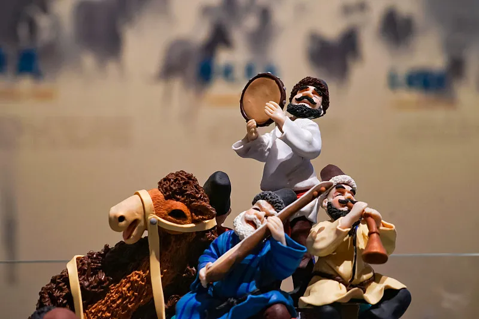

新疆是一个举世闻名的歌舞之乡、这里地大物博，古迹遍地，民俗奇异。

新疆少数民族的服饰色泽艳丽、五彩缤纷，华丽堂皇，种类较多。 维吾尔族、哈萨克族等少数民族妇女爱着彩色连衣裙，戴鲜艳或洁白的头巾，喜爱耳环、耳 坠、项链、手镯、戒指等装饰物，显得雍容华贵、仪态万方。男性爱穿西服、绣花衬衫或袷 袢等。维吾尔族男子还多喜欢在腰间系一条腰带。戴绣花帽几乎是大多数少数民族的共同爱 好，但又随民族与地区不同而互有差异。如维族男女都喜欢戴绣工精致的小花帽；哈族姑娘 喜戴猫头鹰羽花帽；柯尔克孜族青年妇女则喜欢戴红色丝绒圆顶花帽；塔塔尔族妇女尤喜欢 戴镶有彩珠的花帽等。蒙古族男子爱戴呢料大沿礼帽，显得潇洒大方；回族男性则为黑白小 圆帽，显得整洁庄重。各兄弟民族男女都喜欢穿长统皮靴。每逢喜庆节日，各民族都穿上民 族盛装，色彩斑斓，令旅游者目不暇接。并且在回族的聚居区，一般中年以上的男子多戴小 帽，穿白色衬衫，外套青色和棕色坎肩。青年妇女爱穿纯朴素青的黑色大襟衫袄。已婚妇女 一般都要盘头，戴白色、青色布帽或头巾。未婚少女一般都梳辫子，不戴头巾。中青年妇女 有佩带耳环、戒指等金银首饰的习惯。
维吾尔族人待人讲究礼貌。在遇到尊长或朋友时，习惯于把右手按
在前胸中央，然后身体前倾，连声问好。家里来客都热情招待。维吾尔族是一个能歌善舞的
民族。他们的舞蹈轻巧、优美，以旋转快速和多变著称，反映了维吾尔族人乐观开朗的性格。
维吾尔族以农业为主兼营牧业，有经商传统，同时传统手工业十分发达，而且具有较高的艺
术水平，他们制作的地毯、刺绣、丝绸衣料、铜壶、小刀、民族乐器等，具有独特的民族风
格。同时在新疆对于刚出生的孩子更是宠爱有加，哈萨克人把生小孩视为阿吾勒的喜事，婴
儿出生后要举行齐勒大汗库再头仪式，要宰哈勒加羊（为产妇宰的羊）。青年男女要来为产
妇和婴儿祝福，要唱《齐勒大汗库再头》即《出生歌》，祝福母子平安健康，人丁兴旺。一
般《齐勒大汗库再头》要连续唱3个晚上，主人要宰羊款待来客和产妇。在《齐勒大汗库再
头》晚会上，阿吾勒的中老年能参加晚会的也都分批来到产妇家，看望大人小孩，必须赠送
礼物。